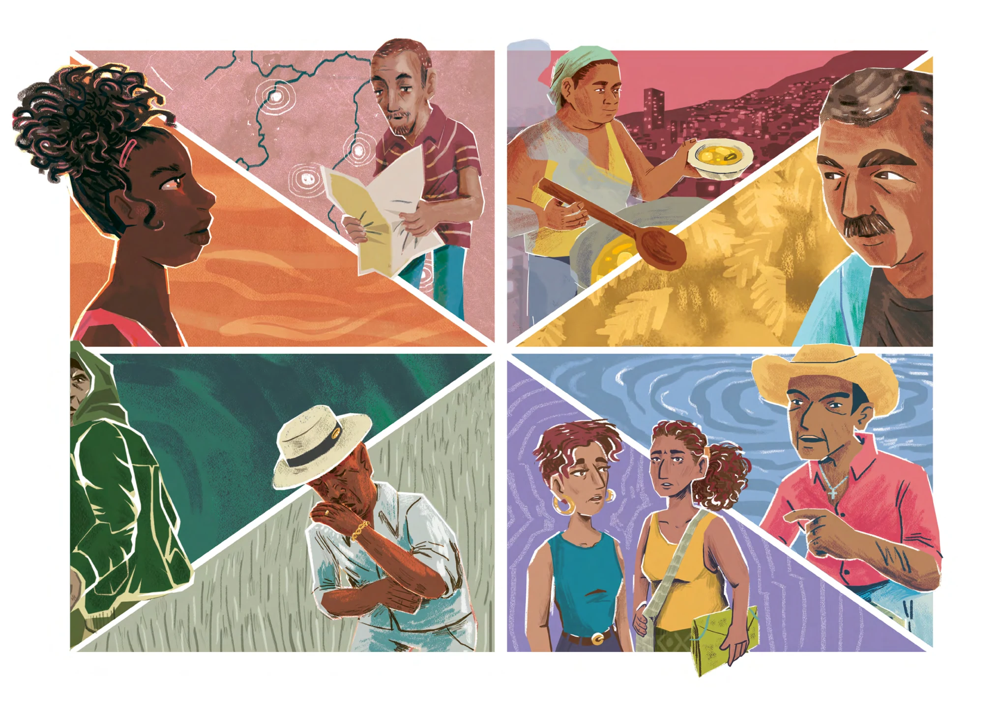
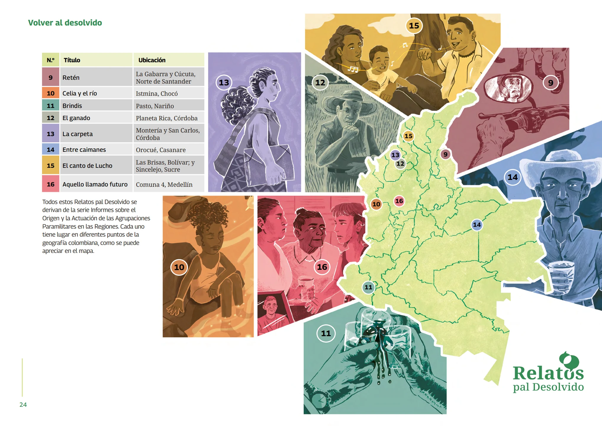

Relatos pal desolvido
Segunda parte de la colecciónSecond part of the collection
Ilustración y diagramación de la segunda entrega de esta colección del Centro Nacional de Memoria Histórica: los relatos 9 al 16 y una introducción que narran la vida en medio de la guerra por medio de historias cortas que se acercan a la vida cotidiana y la experiencia sensible de diversos actores del conflicto. Esta nueva travesía amplía el horizonte para descubrir las estructuras, las relaciones de poder y los entramados económicos, políticos y sociales que hicieron posible el proyecto paramilitar y la instalación de sus lógicas de violencia en amplios territorios del país.
Illustration and layout for the second installment of this collection by Colombia's National Center for Historical Memory: stories 9 to 16 and an introduction that portray life in the midst of war through short stories close to the everyday life and lived experience of different actors in the conflict. This new journey widens the horizon to uncover the structures, power relations and economic, political and social networks that made the paramilitary project possible and allowed its logics of violence to take hold across large parts of the country.

Los ocho relatosThe eight stories
Mapa de los relatosMap of the stories
